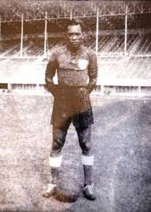
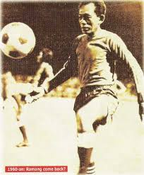
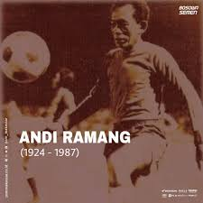

ini adalah klub bola yang berasal dari makassar provinsi sulawesi selatan dan psm makassar juga meruapakan klunb bola tertua yang ada di indonesia
PEMAIN legenda dari klub ini ada andi ramang Sosok Ramang bukan hanya jadi legenda PSM Makassar tapi juga Indonesia. Pria kelahiran 24 April 1928 di Kabupaten Barru Sulsel, Ramang dikenal sebagai pesepak bola alam. Di era Ramang, sejumlah nama mencuat bersama Juku Eja seperti Noor Salam dan Suwardi Arland. Mereka jadi trio maut membawa PSM jadi raja sepakbola Indonesia pada akhir 1950-an.


